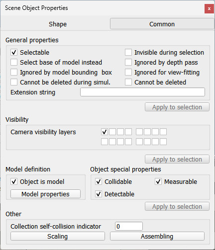
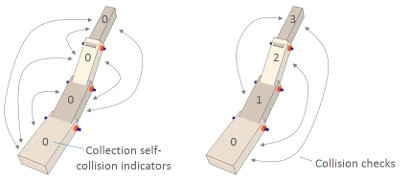

|

General scene object properties dialog
The general scene object properties dialog is located at [Tools > Scene object properties]. You can also open the dialog with a double-click on an object icon in the scene hierarchy, or with a click on its toolbar button:
[Scene object properties toolbar button]
In the scene object dialog, click the Object button to display the object general properties. The dialog displays the settings and parameters of the last selected scene object. If no object is selected, the dialog is inactive. If more than one object is selected, then some parameters can be copied from the last selected object to the other selected objects (Apply to selection-buttons):

[Scene object dialog]
Selectable: indicates whether the object can be selected in the scene. Objects can always be selected in the scene hierarchy. Refer also to the sceneObject.selected property.
Invisible during selection: when enabled, then the object will be invisible for the selection process (i.e. you will be able to select through the object).
Ignored by depth pass: when enabled, then the object will be ignored during the depth rendering pass. The depth rendering pass is used to correctly position the red sphere for camera movements.
Select base of model instead: if enabled, then selecting the object in the scene will select its first parented object marked as object is model base instead (see further down). This property is convenient when protecting a model from faulty manipulations, allowing it to be manipulated as a single entity together with other objects. Refer to the section on models and also to the sceneObject.selectModel property.
Ignored by model bounding box: when selected, and the object is part of a model, then the model bounding box (i.e. model selection bounding box) will not encompass that object. This is useful for invisible objects that might make the model bounding box appear too big. This property has no functional effect. Refer also to the sceneObject.model.notInParentBB property.
Ignored for view-fitting: objects with this item selected will not be taken into account when fitting a scene to a view while no object is selected. Usually floors and similar will be tagged as such. Refer also to the view fitting toolbar button and to the sceneObject.ignoreViewFitting property.
Cannot be deleted during simul.: when enabled, then the object will ignore a deletion operation when a simulation is running (deletion will however still work when triggered via code). Refer also to the sceneObject.cannotDeleteInSim property.
Cannot be deleted: when enabled, then the object will ignore a deletion operation (deletion will however still work when triggered via code). Refer also to the sceneObject.cannotDelete property.
Hidden during simulation: when enabled, then the object is hidden during simulation.
Not moveable: when enabled, then the object cannot be moved with the mouse. Refer also to the sceneObject.mov.rotNoSim, sceneObject.mov.translNoSim, sceneObject.mov.rotInSim and sceneObject.mov.translInSim properties.
Extension string: a string that describes additional object properties, mainly used by extension plugins.
Camera visibility layers: each object in CoppeliaSim can be assigned to one or several visibility layers. If there is at least one visibility layer that matches the layer selection dialog layers, then the object will be visible when seen from a camera. By default, a shape is assigned to the first layer, a joint to the second layer, a dummy to the third layer, etc. Refer also to the sceneObject.layer property.
Object is model base: indicates whether the object should act as the base of a model. An object flagged as base of model has special properties (e.g. copying the object will also automatically copy all its hierarchy tree). Refer also to the sceneObject.modelBase property. Additionally, when such an object is selected, the selection bounding box is displayed as thick stippled lines, encompassing the whole model. Refer also to the select base of model instead item above. Additionally, a model will share a same identifier with all of its copies or clones. A model can then transfer its DNA (i.e. share an instance of itself) to all of its clones, via the transfer DNA toolbar button (refer also to the sceneObject.dna property). Imagine having 100 same robots in your scene that you want to modify in a similar way: simply modify one of them, select it, then click the transfer DNA toolbar button.
[DNA transfer toolbar button]
Model properties: allows opening the model dialog. Refer also to the sceneObject.model.notCollidable, sceneObject.mode.notDetectable, sceneObject.model.notMeasurable, sceneObject.model.notDynamic, sceneObject.model.notRespondable, sceneObject.model.notVisible, sceneObject.model.scriptsNotActive and sceneObject.model.notInParentBB properties.
Collidable: allows enabling or disabling collision detection capability for the selected collidable object. See also the sceneObject.collidable property.
Measurable: allows enabling or disabling minimum distance calculation capability for the selected measurable object. See also the sceneObject.measurable property.
Detectable: allows enabling or disabling proximity sensor detection capability for the selected detectable object. See also the sceneObject.detectable property.
Collection self-collision indicator: when performing collision (or minimum distance) calculations between two identical collections, CoppeliaSim will normally check all collection items against all other items in that collection (see also the sceneObject.collectionSelfCollisionIndicator property). In some situation, such as a kinematic chain, one doesn't want to check consecutive links, since they might be constantly colliding at the interface. In that case, you can use the collection self-collision indicator: two items of a same collection will not be checked against each other if their indicator difference is exactly 1, 10, 100, 1000, 10000 or 100000, as can be seen on following figure:

[Collection self-collision indicators]
|